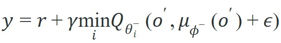
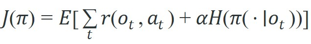

"Discrete actions ask which door. Continuous actions ask exactly how far to push, and the critic must answer in kind."
Section 16.3
Figure 16.3A previews the comparison this section works through in detail: a shared actor-critic interface with three different answers to the overestimation problem.
The figure's mention of "twin critics" is introduced ahead of its explanation: the Theory section below defines what a twin critic pair is and why TD3 and SAC both use one before any equation depends on the term.
This section assumes familiarity with replay buffers and target networks from section 16.2, and with the Q-function formulation introduced in section 16.1. The maximum-entropy objective that underlies SAC is developed further in section 16.4. The actor-critic architectures covered here recur in Part V alongside sim-to-real transfer, where section 20.2 examines which continuous-control policies survive the gap between simulation and hardware.
A robot hand reaching for a fragile object does not choose between "grasp" and "release." It chooses 16 joint torques, each a real number, updated 100 times per second. Discrete Q-learning breaks the moment the action space becomes infinite. The algorithms in this section, Deep Deterministic Policy Gradient (DDPG), Twin Delayed DDPG (TD3), and Soft Actor-Critic (SAC), were the first to make off-policy deep RL (learning from past transitions stored in a replay buffer, rather than only from the policy's current behavior) work reliably at that scale. Today they run inside sim-to-real pipelines that train locomotion, dexterous manipulation, and surgical robotics. The sections that follow build up to a TD3 critic update with clipped double-Q targets, show how to tune SAC's entropy temperature, and explain exactly why deterministic actors tend to collapse while stochastic ones do not.
Choosing among DDPG, TD3, and SAC for a continuous-control task turns on three questions: how each one controls critic overestimation, how it drives exploration, and which action-level logs prove a learned policy is safe to run on hardware.
Ask a discrete agent to pick a gripper velocity and it must first quantize a continuous dial into bins; ask it to balance a torque to the third decimal place and the table of possible actions becomes infinite, and the max over that table, the operation at the heart of tabular Q-learning, quietly stops being a lookup at all. A robot torque, steering angle, or gripper velocity can take infinitely many values, and no finite table can enumerate them.
DDPG, TD3, and SAC solve this by pairing a critic with an actor. The critic estimates value for a continuous action, while the actor proposes the action to evaluate or execute. This section explains how each method controls the bootstrapping error (the compounding error that arises when a value estimate is updated using another estimate rather than a true outcome) that appears when the critic and actor improve each other from imperfect off-policy data. Figure 16.3B below diagrams this actor-critic feedback loop before the per-algorithm mechanics are introduced.
In discrete Deep Q-Network (DQN), the max over actions is explicit. In continuous control, the actor network becomes the mechanism that searches the action space, so actor errors and critic errors can amplify each other.
DDPG uses a deterministic actor $\mu_\phi(o)$ and a critic $Q_\theta(o,a)$. The actor is trained to choose actions that the critic values highly, while the critic is trained from replayed Bellman targets drawn from the replay buffer and stabilized with target networks. This is efficient, but brittle: if the critic overestimates an action, the actor will move toward that action.
Concretely, the actor update follows the critic's gradient with respect to the action: $\phi \leftarrow \phi + \alpha_\phi \nabla_\phi \frac{1}{N}\sum Q_\theta(o, \mu_\phi(o))$. There is no explicit max over actions, as in tabular Q-learning; the actor network itself plays that role by climbing whatever direction the critic currently reports as most valuable, which is exactly why a critic overestimate at one action pulls the actor toward it.
TD3 addresses that brittleness with three design choices. It trains two critics and uses the smaller target value. It delays actor updates so the critic has time to improve. And it adds small clipped noise to the target action so the critic cannot exploit a narrow spike in value. On a physical robot, a critic spike at one precise torque value is dangerous. The actor converges toward that torque, the joint exceeds its safe range, and the hardware protection trips before useful data is collected. Smoothing forces the critic to assign consistent value to a neighborhood of nearby torques, not a single fragile point. The mechanism clips Gaussian noise to a range $[-c, c]$ and adds it to the target actor's output before evaluating the critic. Because the target trains against this perturbed action, it cannot learn to score any single action far above its neighbors. The target commonly has the form:

So far: DDPG pairs one deterministic actor with one critic and is brittle to overestimation; TD3 fixes that with three additions, twin critics, delayed actor updates, and clipped target-action noise, combined in the target formula above. Next, SAC attacks the same brittleness from a different angle: the policy itself, not just the critic.
Think of a chef perfecting a dish. A chef who always follows the exact same recipe gets very good at that one dish, but the first time an ingredient is missing or an oven runs hot, they are lost. A chef who deliberately varies seasoning amounts, cooking times, and techniques by small random amounts during practice learns a whole neighborhood of working recipes. When something goes wrong, they already know ten nearby moves that still produce a good result. SAC's entropy term works the same way: it rewards the policy for keeping a spread of action choices rather than collapsing to one. The agent that stays slightly unpredictable during training arrives at hardware deployment with a buffer of nearby actions to fall back on when conditions shift.
Where TD3 smooths the target action to keep a deterministic critic honest, SAC attacks the same brittleness from the actor side, by refusing to let the policy collapse to a single action at all. A deterministic policy that converges too early has not learned control; it has learned a brittle shortcut that the hardware will refuse. SAC changes the objective by rewarding both task return and action entropy, the maximum-entropy formulation developed in the next section. The policy is stochastic, so the agent keeps useful diversity in its action choices:

The temperature $\alpha$ controls how much the policy values entropy. In contact-rich robotics, that entropy can help discover recovery actions that a deterministic actor would stop trying too early. On the MuJoCo HalfCheetah benchmark, as reported in Haarnoja et al. (2018), a vanilla DDPG run typically requires around 3 million environment steps to match the performance that SAC reaches in 300,000 steps: this is the entropy bonus accelerating exploration, and the gap widens further once the task involves unexpected contact.
Input: replay buffer $\mathcal{D}$, actor $\mu_\phi$, twin critics $Q_{\theta_1}, Q_{\theta_2}$, target networks $\mu_{\phi^-}, Q_{\theta_1^-}, Q_{\theta_2^-}$, discount $\gamma$, noise clip $c$, policy delay $d$, learning rates $\alpha_\phi, \alpha_\theta$
Output: updated actor parameters $\phi$, updated critic parameters $\theta_1, \theta_2$
Addressing Function Approximation Error in Actor-Critic Methods (Fujimoto et al., ICML 2018): clipped double-Q targets and delayed actor updates reduce the overestimation bias that makes continuous-control policies brittle. For embodied agents, that bias is dangerous because an overvalued action becomes a high-torque command the actor learns to chase onto hardware.
DDPG is the simplest actor-critic route for continuous actions, TD3 is a conservative correction for critic overestimation, and SAC is a maximum-entropy route that keeps exploration inside the policy objective.
Code Fragment 1 computes a TD3-style target from two critics. The smaller critic value is used because overestimated value is more dangerous than underestimated value when the actor is trained to chase high values.
# Compute a TD3 target with clipped double critics.
# The smaller critic value limits overestimation before the actor sees it.
reward = 0.3
gamma = 0.98
critic_1_target = 1.40
critic_2_target = 0.90
target_policy_noise = 0.05
smoothed_action = 0.62 + target_policy_noise
bootstrap = min(critic_1_target, critic_2_target)
td3_target = reward + gamma * bootstrap
print(f"smoothed_action={smoothed_action:.2f}")
print(f"bootstrap={bootstrap:.2f}")
print(f"td3_target={td3_target:.2f}")The expected output shows the TD3 target being anchored by the lower critic value, not the optimistic one. Readers should interpret the td3_target of 1.18 as a deliberately conservative bootstrap built from a slightly perturbed target action.
bootstrap uses the smaller of critic_1_target and critic_2_target, which is TD3's clipped double-Q idea. The smoothed_action value represents target policy smoothing, a guard against learning a critic spike at one precise continuous action.Trace through a single TD3 critic update for a one-dimensional torque action with concrete numbers. Suppose a sampled transition is observation $o$, action $a=0.50$, reward $r=0.20$, next observation $o'$, with $\gamma=0.99$, noise clip $c=0.10$.
Step 1, target action. The target actor outputs $\mu_{\phi^-}(o')=0.62$. Draw smoothing noise $\epsilon=0.30$, then clip it to $[-0.10, 0.10]$, giving $0.10$. The smoothed target action is $\tilde a = 0.62 + 0.10 = 0.72$.
Step 2, twin target critics. Evaluate both target critics at $(o', \tilde a)$: $Q_{\theta_1^-}=1.40$ and $Q_{\theta_2^-}=0.90$. Take the minimum: $\min(1.40, 0.90) = 0.90$. The optimistic critic ($1.40$) is discarded.
Step 3, bootstrap target. $y = r + \gamma \cdot 0.90 = 0.20 + 0.99 \times 0.90 = 0.20 + 0.891 = 1.091$.
Step 4, critic loss. The online critics predict $Q_{\theta_1}(o,a)=1.25$ and $Q_{\theta_2}(o,a)=0.80$ at the real action $a=0.50$. The squared residuals are $(1.25 - 1.091)^2 = 0.0253$ and $(0.80 - 1.091)^2 = 0.0847$. Both critics step toward $y=1.091$; critic 2 takes the larger step because it was further off.
Notice the actor was not touched. If this step is not a multiple of the delay $d=2$, the actor and all target networks stay frozen, and only $\theta_1, \theta_2$ move. That delay is what gives the critics time to settle before the actor chases their estimate.
The same target logic maps cleanly to embodied control. For a torque-controlled arm, target smoothing says the critic should value a small neighborhood of torques, not a single fragile torque vector that only works in simulation.
Stable-Baselines3 provides DDPG, TD3, and SAC behind a compact API, while CleanRL exposes each update in a readable script. Use the library to avoid fragile training boilerplate, but still log critic disagreement, action saturation, entropy, and environment-condition labels.
A continuous-action policy can exploit simulator details by choosing precise torques that are unavailable, unsafe, or unstable on hardware. If evaluation reports return without action-limit violations, actuator saturation, and critic disagreement, the result is incomplete.
A common assumption is that SAC's entropy term is purely an exploration device that should be annealed to zero once training converges, treating it like an epsilon in epsilon-greedy. In embodied AI this assumption causes failures at deployment: physical robots encounter novel contact geometries, cable flex, and sensor noise that were not present in training, and a near-deterministic policy has no mechanism to recover because it has already committed to a single action mode for each observation. The correct mental model is that entropy in SAC is a robustness regularizer, not only an exploration schedule. A policy that retains meaningful entropy at evaluation time spreads probability mass over nearby actions, so small hardware perturbations shift the executed action within the distribution rather than outside it entirely. For contact-rich tasks, keep the entropy target at a non-trivial value (for example, at least -0.5 times the action dimension) and verify that entropy remains above 0.1 nat during hardware rollouts, not just during simulation training.
Each algorithm breaks in a characteristic way. DDPG's single critic overestimates value for actions the actor visits rarely. The symptom is a rising Q-loss curve alongside a policy that saturates actuator limits and stops improving. TD3 can mask overestimation without curing it. When both critics converge to similar but jointly wrong values, the clipped minimum offers no protection. The actor then chases a false peak. Look for low critic disagreement paired with falling episode return after a stable plateau. SAC fails most often through entropy collapse. The temperature $\alpha$ decays to near zero, the policy becomes nearly deterministic, and the agent loses the ability to recover from novel contact states. The surprising reversal here is that SAC, the most sophisticated of the three algorithms, tends to break more catastrophically than DDPG at this point. DDPG was always deterministic, so the hardware team knew to plan around it. A collapsed SAC policy instead looks deterministic on evaluation logs yet was designed around diversity it no longer has. The observable signal is entropy dropping below 0.1 nat while evaluation success variance spikes.
In Stable-Baselines3's SAC, the default ent_coef='auto' sets an entropy target of -action_dim and tunes temperature with its own Adam optimizer at learning_rate=3e-4. For contact-rich manipulation tasks where the reward signal is sparse and delayed, that learning rate is often too aggressive and causes the temperature to collapse within the first 50k steps, well before the policy has explored enough. Set target_entropy explicitly (for example, -0.5 * action_dim) and lower the entropy coefficient learning rate to 1e-4 via the policy_kwargs or a custom schedule. If entropy still drops below 0.1 nat before 100k steps, treat it as a tuning failure rather than a converged policy.
A manipulation team can compare TD3 and SAC on the same pushing task by co-computing success, contact force, action saturation, and recovery after an object slip. TD3 may produce crisp deterministic pushes, while SAC may preserve enough stochasticity to recover from surprising contact changes.
Google DeepMind applied a continuous-control RL controller to the cooling systems of Google's data centers, where the agent sets continuous setpoints (valve openings, fan speeds) every five minutes from sensor observations, reportedly reducing cooling energy use by up to 40%. The public description of that deployment does not specify DDPG, TD3, or SAC by name; the point transfers at the level of problem shape, not algorithm identity. It is, in practice, exactly the kind of high-dimensional continuous action space, with hard safety bounds on each actuator, that DDPG-family methods were built to handle, and it illustrates the stakes of the safety-bound logging this section recommends.
For continuous control: ddpg, td3, sac, the useful test is simple: could a teammate point to the log line, plot, or trace that proves the idea changed the agent's next action?
Diffusion-based actor policies (2024-2025). Rather than outputting a single deterministic or Gaussian action, diffusion actors generate actions by iteratively denoising from random noise conditioned on the observation. Consistency Policy (Prasad et al., CoRL 2024, Carnegie Mellon / Meta) shows that a single-step consistency distillation of a diffusion actor matches or beats SAC on 13 dexterous manipulation tasks while running at real-time inference rates on a Franka arm. The gain comes from the multimodal action distribution: diffusion actors represent contact-rich skills such as peg insertion and cup stacking as a mixture of approach trajectories rather than a single mean, which is exactly what entropy-regularized SAC tries to approximate but cannot fully capture with a diagonal Gaussian (a bell-curve action distribution with no correlation between action dimensions, SAC's usual policy shape). The open implementation challenge is integrating diffusion actors with off-policy critic updates, since diffusion inference does not produce a closed-form log-probability needed for the SAC entropy term.
World-model-guided off-policy critics (2024-2025). TD-MPC2 (Hansen et al., ICLR 2024, UC San Diego) couples a latent world model with a TD3-style clipped double-Q critic so that critic targets are computed from imagined rollouts rather than only from replayed transitions. On 104 continuous-control tasks spanning locomotion, dexterous manipulation, and humanoid control, TD-MPC2 with a single shared checkpoint outperforms SAC by an average of 28% on final episode return while using 5x fewer real environment steps. For embodied deployment, the key advantage is that the world model can be queried offline during a hardware maintenance window to improve the critic without collecting new data.
Cross-embodiment pre-trained value functions (2024-2026). The pi0 foundation policy (Black et al., Physical Intelligence, 2024) and follow-on work from Google DeepMind's RT-2-X line show that a critic pre-trained on diverse robot datasets from the Open X-Embodiment corpus can be fine-tuned to a new robot morphology in under one hour of real interaction, compared with roughly 8 hours from random initialization. The active research question is whether a shared value function can generalize across robots with fundamentally different kinematic chains, since current fine-tuning still requires the target embodiment to appear at least partially in the pre-training distribution.
Open problem for PhD students. None of the three directions above has a principled solution for safe critic extrapolation: when the replay buffer contains only low-torque trajectories and the critic must estimate value for a high-torque action never tried on hardware, a case of distributional shift (the actions being evaluated no longer resemble the actions the critic was trained on), all methods (ensemble, diffusion, world-model, pre-trained) can still return confidently wrong estimates that map to unsafe commands. A tractable dissertation problem is a conservative critic that produces a certified upper bound on Q-value under distributional shift, verified on at least one real robot platform, with the bound tightening provably as more on-policy data arrives.
Can you state which network proposes the action, which network evaluates it, which target network supplies the bootstrap value, and which logs reveal action saturation or critic disagreement? If not, the continuous-control loop is not auditable.
With those failure modes in view, the three algorithms separate not by what they observe or actuate but by how much they trust their own value estimates. DDPG, TD3, and SAC differ less in their environment interface than in their attitude toward critic error. DDPG trusts one critic and one deterministic actor. TD3 distrusts overestimation enough to train two critics. SAC distrusts premature certainty enough to optimize entropy alongside return.
That distinction matters in embodied work because physical action errors have asymmetric cost. An underestimated value may slow learning, but an overestimated high-torque action can break contact, drop an object, or leave the training distribution entirely.
| Tool or Library | Role in the Topic | Builder Advice |
|---|---|---|
| MuJoCo | Continuous dynamics | Use it to test mass, friction, and delay perturbations under fixed action limits. |
| Stable-Baselines3 | DDPG, TD3, and SAC baselines | Use it for maintained continuous-control implementations with consistent logging. |
| CleanRL | Readable algorithm updates | Use it when you need to inspect actor loss, critic loss, entropy, and target updates. |
| Tianshou | Composable off-policy training | Use it to swap collectors, buffers, policies, and critics without rewriting the experiment. |
| ROS 2 control logs | Hardware action evidence | Use them to verify that learned actions remain inside actuator limits and safety envelopes. |
A robust continuous-control implementation logs the actor's action and the critic's evidence for that action. Code Fragment 2 records the fields that separate deterministic control, clipped double-Q control, and entropy-regularized control.
# Build one audit record for a continuous-control action.
# The fields expose actor output, critic disagreement, and safety limits.
from dataclasses import dataclass, asdict
@dataclass
class ContinuousControlAudit:
algorithm: str
raw_action: float
executed_action: float
critic_1: float
critic_2: float
entropy: float
saturated: bool
def as_row(self) -> dict[str, object]:
return asdict(self)
record = ContinuousControlAudit(
algorithm="SAC",
raw_action=1.18,
executed_action=1.00,
critic_1=2.4,
critic_2=1.7,
entropy=0.42,
saturated=True,
)
print(record.as_row())The expected output is an audit row that immediately exposes two continuous-control risks: the actor asked for more torque than the actuator allowed, and the critics disagree materially about the value of that command. That combination should trigger closer inspection before anyone treats the rollout return as robust evidence.
ContinuousControlAudit records the raw actor output, clipped executed action, two critic values, entropy, and saturation flag. These fields explain whether a high return came from robust control or from repeatedly pushing against an action bound.When a continuous-control method fails, check four suspects: the actor left the safe action region, the critics disagreed, entropy collapsed, or replay lacked the new dynamics. Then rerun one perturbation, plotting action histograms and critic disagreement beside the episode video.
For DDPG, TD3, and SAC, compare return, success, energy use, contact force, action saturation, entropy, and critic disagreement in one evaluation script over one perturbation panel. Do not compare SAC entropy from one run to TD3 return from another run and call it an algorithmic conclusion.
Continuous off-policy control is about managing actor-critic feedback. TD3 reduces overestimation, SAC preserves exploration through entropy, and both need action-level logs before embodied deployment.
Choose a continuous-control task and define one co-computed metric panel for DDPG, TD3, and SAC. Include at least one task metric, one safety metric, one action-distribution metric, and one critic diagnostic.
Goal. Empirically see how SAC's entropy bonus produces a more robust policy than TD3 under a dynamics shift, and watch what happens when entropy collapses.
Tools needed. Python with stable-baselines3, gymnasium[mujoco], and matplotlib. Use the Hopper-v4 environment (a continuous-torque locomotion task that is sensitive to dynamics).
Steps. Train SAC and TD3 on Hopper-v4 for 200k steps each, logging episode return and (for SAC) the entropy coefficient via a callback. Then evaluate both frozen policies on a perturbed copy of the environment where you scale the agent's mass by 1.3x (set it through the MuJoCo model before reset).
What to vary. Sweep the mass scale from 1.0 to 1.5 in steps of 0.1, and separately rerun SAC once with ent_coef=0.0 (entropy disabled) to simulate entropy collapse.
What to observe. Plot evaluation return versus mass scale for the three configurations. The entropy-regularized SAC should degrade more gracefully than TD3, while the ent_coef=0.0 SAC should fall off as sharply as, or worse than, TD3, confirming that the entropy term, not the twin critics alone, is carrying the robustness. This experiment fits comfortably in 15 to 30 minutes of agent runtime if you reduce step counts on a CPU-only machine.
Beginner (weekend): Train a SAC agent on the MuJoCo HalfCheetah-v4 environment using Stable-Baselines3, then swap to TD3 and plot critic disagreement and episode return side by side to see the effect of clipped double-Q targeting. The key challenge is setting up MuJoCo and Gymnasium correctly on your machine and writing the logging callback that captures entropy and critic values per step.
Intermediate (1 to 2 weeks): Implement a TD3 agent in PyBullet's Kuka arm environment and extend the ContinuousControlAudit dataclass from this section to record per-joint saturation, then visualize which joints hit their limits most often and whether clipping correlates with task failure. The key challenge is bridging PyBullet's action space conventions with TD3's target-smoothing noise range so that clipped Gaussian perturbations stay physically meaningful rather than pushing joints into unsafe configurations.
Advanced (2 to 4 weeks): Use LeRobot with Isaac Lab to train a SAC policy for a 6-DoF pick-and-place task under domain randomization (varying friction and object mass), then transfer the policy to a simulated UR5 and measure the success-rate drop; compare against a TD3 baseline trained without entropy regularization. The key challenge is choosing an Isaac Lab friction randomization range that is wide enough to improve transfer but not so wide that the policy never learns reliable grasping in the first place.
This section turned continuous control: DDPG, TD3, SAC into a testable embodied-learning contract: define the loop, choose the tool, save one comparable artifact, and diagnose failure by interface. Next, continue with Section 16.4, where the same evaluation habit carries into the next reinforcement-learning decision.
Identifies and fixes the Q-value overestimation problem in DDPG through three mechanisms: clipped double critics, delayed policy updates, and target-policy smoothing. Read Section 4 for each fix and the ablation in Section 5; these three tricks are now standard practice for off-policy continuous-control and appear directly in SAC variants.
Haarnoja, T. et al. (2018). Soft Actor-Critic. ICML.
Combines off-policy learning with a maximum-entropy objective, adding an automatic temperature parameter that balances exploration and exploitation without manual tuning. Read Section 4 for the soft Bellman equation and the entropy temperature update; SAC is the most widely used off-policy baseline for continuous robot control tasks.
Mnih, V. et al. (2015). Human-level control through deep reinforcement learning. Nature.
Demonstrates that replay buffers and target networks together stabilize Q-learning with neural function approximators. Read Section 2 for the DQN algorithm and the supplementary for network architecture; replay and target-network ideas appear in every subsequent off-policy deep RL method including DDPG, TD3, and SAC.
Lillicrap, T. P. et al. (2015). Continuous control with deep reinforcement learning. arXiv.
Adapts DQN to continuous action spaces by combining a deterministic policy gradient actor with a Q-function critic and using replay and target networks from DQN. Read Algorithm 1 for the full update loop; DDPG is the direct predecessor to TD3 and understanding its overestimation problem motivates TD3's twin-critic design.
Watkins, C. J. C. H., and Dayan, P. (1992). Q-learning. Machine Learning.
The canonical derivation of tabular Q-learning and its convergence proof. Read to understand the off-policy update rule and why the max over next-state actions makes Q-learning off-policy by construction; this distinction carries through to DQN and all its successors.
A modular PyTorch RL library with clean separation between collector, trainer, and policy components. Use it to prototype off-policy algorithms without reimplementing replay buffers and target-network logic; the policy abstraction makes it straightforward to compare DQN, DDPG, TD3, and SAC in a common framework.